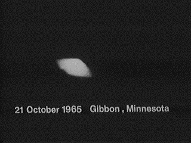

A Middletown (Ohio), observation de Tucker Cas
Blue Book non r�solu.
 Le Sergent Tech Charles "Chuck" Sorrels, op�rateur de tour de contrôle de la base d'Edwards voit un groupe
d'objets lumineux �mettant des lumières rouge, blanche et bleue s'approcher du champ d'aviation. Lorsque ces objets
commence a effectuer des manœuvres inhabituelles, il en conclut que ce n'est pas ordinaire et rappelle le
Commandement de la D�fense Aérienne ? en l'occurence une unité nommée LAADS (Los Angeles Air Defense Sector).
Le major Struble du LAADS ordonne l'enregistrement des conversations. Il implique le NORAD et d'autres bases a�riennes : Norton, Hamilton, George et March. Le major veut envoyer des
avions vers les objets mais ne peut le faire tant qu'un capitaine de Edwards
n'ait approuv� l'envoi des avions. Ce capitaine est "l'officier OVNI" ("UFO officer", prononc� "Yoo-fo") responsable
à la base. On doit demander que le ou les avions puissent partir de la 28�me Division Aérienne �
Hamilton, on ils ne d�collent pas du tout UFO Window.